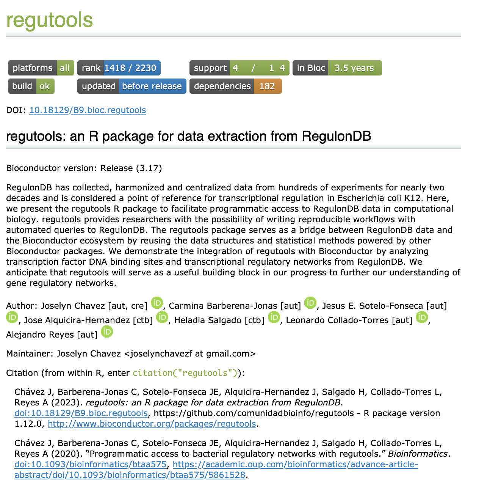

7 Creación de viñetas
José Antonio Ovando Ricárdez
05 de agosto de 2025
7.1 ¿Qué es una viñeta/vignette? 📝✨
Es una guía extendida sobre cómo funciona el paquete. Es recomendable que muestre cómo utilizar las funciones del paquete, aplicado en un flujo de trabajo; por ejemplo: el análisis estadístico de una encuesta 📊 o el análisis de expresión diferencial de genes.
Podemos estructurarlo como haríamos con la escritura de un capítulo de libro o de un artículo científico: debe mostrar el problema a resolver y la metodología paso a paso sobre cómo el paquete lo resuelve.
Si el paquete contiene funciones que se complementan entre sí para alcanzar un fin específico, entonces debes mostrar su uso de forma compartamentalizada.
7.2 Características de una vignette 🌟
- Debe mostrar un flujo de análisis explotando el potencial de tu paquete 📊🚀.
- Implementa tantas funciones de tu paquete como sea posible, pero no es necesario que incluya todas 🛠️✨.
- Los datos a usar deben ser pequeños o fáciles de acceder 📂🔍.
- Puedes crear múltiples viñetas para mostrar diferentes casos de análisis y cubrir una mayor cantidad de funciones 📝📚.
7.4 ¿Cómo crear una viñeta? ❓🔍
Esta función tendrá tres efectos ✨:
- Generar el directorio vignettes en caso que no exista 📂🔧.
- Agregar dependencias en el archivo DESCRIPTION (por ejemplo, knitr necesario para construir viñetas dentro del paquete) 📄📦.
- Abrir un template en formato .Rmd para comenzar a escribir la viñeta, que se va a guardar en vignettes/mi_vignette.Rmd 📝💾.
7.5 ¿Cómo guardar y actualizar la viñeta? 🔄💻
Una vez que se ha generado el archivo vignettes/mi_vignette.Rmd, se hacen las modificaciones necesarias. Puedes usar el comando:
Para guardar los cambios, debes hacer clic en el botón Knit o utiliza la combinación de teclas Ctrl/Cmd-Shift-K 💾✨.
7.6 Veamos un ejemplo 🔍👨💻
Busca la viñeta del paquete regutools en la página de Bioconductor 🌐:
Viñeta de regutools en Bioconductor 📦📄

7.7 Actividad
7.7.1 Ejercicio 1: Identificación de viñetas en paquetes de interés en Bioconductor 📚🔍
En equipos selecciona dos paquetes almacenados en Bioconductor que sean de tu interés y responde las siguientes preguntas:
¿Ambos paquetes incluyen viñetas? 📝❓
¿Qué aspectos de la viñeta del paquete A versus el paquete B te llaman más la atención? 🔍🤔
¿Consideras que alguna viñeta está mejor desarrollada que la otra? Explica por qué 💭📊.
7.7.2 Ejercicio 2: Creación de viñetas en R 🛠️📄
Pasos:
- Cargar los paquetes necesarios
- Crear un nuevo paquete de R (si no tienes uno ya creado)
- Configurar el paquete para Bioconductor
Ejecuta el siguiente comando para configurar el paquete con las mejores prácticas de Bioconductor:
Esto agregará varios archivos de configuración y plantillas útiles para trabajar con Bioconductor.
- Crear una viñeta con biocthis
Ejecuta el siguiente comando para agregar una viñeta en formato R Markdown. Cambia “mi_vignette” por el título de la viñeta que prefieran.
Esto creará un archivo R Markdown en la carpeta vignettes/ dentro del paquete.
- Editar la viñeta
Abre el archivo creado en vignettes .Rmd. Incluye contenido que describa una función del paquete.
- Abrir la viñeta en el navegador y renderiza el archivo .Rmd